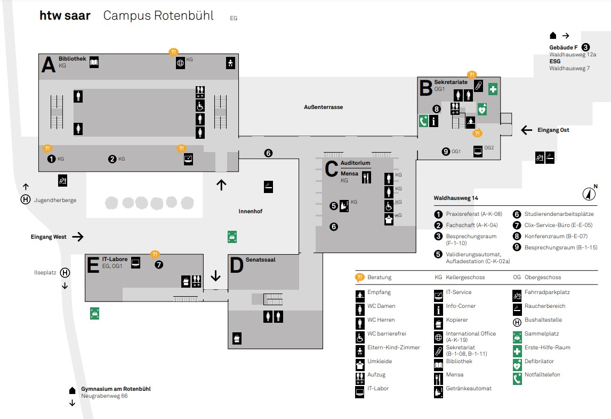

Suchen
HTW Saar Wegweiser
Vorlesungsräume
Sekretariat
Bibliothek

Startseite
Standortkarte
Impressum
Standortsuche
Htw-Saar · Waldhausweg 14 · 66123 Saarbrücken
Tel: 0681 58 67-512 · Fax: 0681 58 67-507 ·